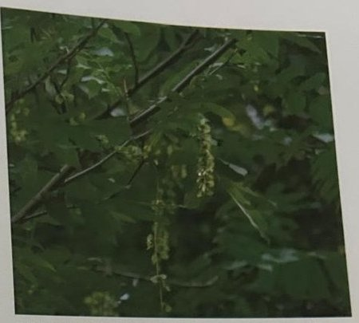

Groepen › Oude Wereld
33. Noord-Iran, Elboersgebergte

Waar Iran gewoonlijk een woestijnbeeld oproept, ligt in het noorden, in de landstreek Hyrcanië bij de Kaspische Zee, een groene gordel van bijna subtropische, soms nog ongerepte wouden. Pas in de laatste decennia is er zeer veel bos gekapt en verwoest. Met uitzondering van Jeneverbes, Italiaanse cipres en Oosterse levensboom op vulkanische bodems, gaat het vooral om loofhoutbos, dat veel gemeen heeft met de bossen in de Georgische landstreek Colchis aan de Zwarte Zee. Op vochtigere bodems staan Elzen- en Vleugelnootbossen, elders gemengde eikenbossen. In de kleine arboretumgroep 33 staan Kastanjebladeik en Kaukasische eik in de buurt van Oosterse beuk. Er staat ook een mooi exemplaar van Perzisch ijzerhout of Parrotia, een opmerkelijke soort met afbladderende stam, kleine kleurrijke bloemen en, zoals de naam het zegt, bijzonder hard hout. Een andere opvallende soort aan de zuidkant van de Groep is de Fluweelesdoorn, zo genoemd vanwege de viltige onderkant van het blad.
Uit het boek
0,37 ha · 16 soorten · 99 bomen · weerstation Bandar Anzali
- De Hyrcanische bossen van Noord-Iran: Perzisch ijzerhout, vleugelnoot en aan de zuidrand de fluweelesdoorn.

Bron: Geografisch Arboretum Tervuren. Een wereldreis rond bomen (2020), p. 242 en volgende.
Deelgroepen
- 33 – Noord-Iran
Soorten in deze groep (16)
- Acer velutinum var. glabrescensFluweelesdoorn · 22 bomen
- Fagus orientalisOosterse beuk · 15 bomen
- Diospyros lotusLotusboom · 11 bomen
- Fraxinus excelsiorGewone es · 11 bomen
- Euonymus europaeusWilde kardinaalsmuts · 10 bomen
- Pterocarya fraxinifoliaKaukasische vleugelnoot · 3 bomen
- Viburnum lantanaWollige sneeuwbal · 3 bomen
- Zelkova carpinifoliaKaukasische zelkova · 3 bomen
- Pinus speciesden · 2 bomen
- Quercus macrantheraKaukasische eik · 2 bomen
- Castanea sativaTamme kastanje · 1 boom
- Juglans speciesWalnoot · 1 boom
- Parrotia persicaPerzisch ijzerhout · 1 boom
- Pinus nigraZwarte den · 1 boom
- Pinus sylvestrisGrove den · 1 boom
- Quercus castaneifoliaKastanjebladeik · 1 boom
Tekst en foto: arboretum-tervuren.be (Koninklijke Schenking), met toestemming gebruikt.